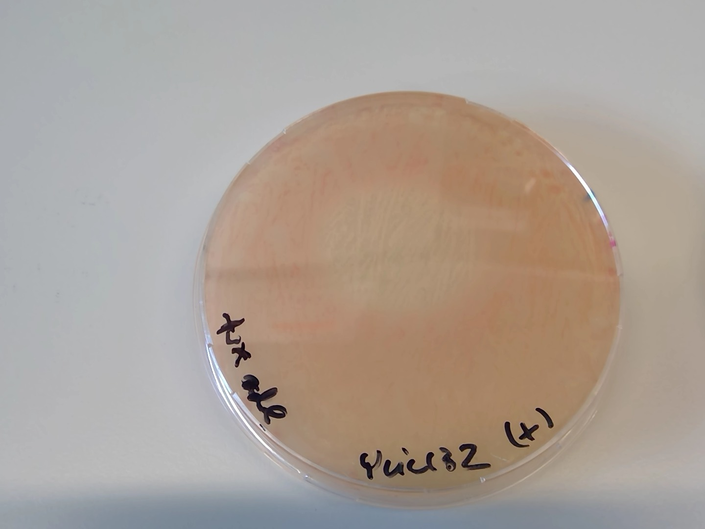
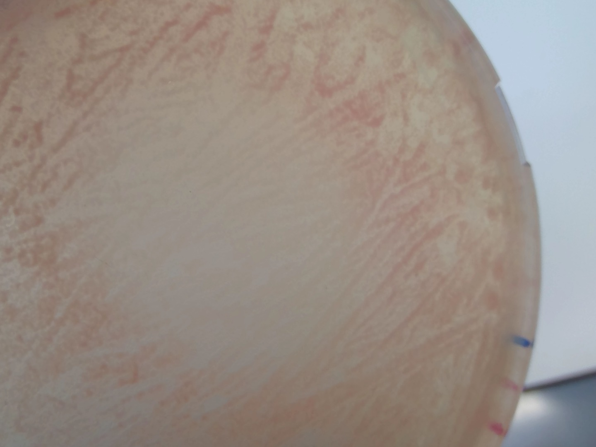

Title: 14062019-ylic132 transformation with the OEP2 (unsuccesful) :x: :disappointed:¶
Date¶
14062019
Objective¶
To remove the ura3 gene from ylic132= ade2- ura3+ by inserting an empty sequence in the ade2 locus , where the ura3 gene is in ylic132.
Method¶
Yeast transformation protocol
I used in this case 10ml of overnight culture instead of 150 ml as the protocol points out. Then I used the lithium acetate volume (to a final volume of 500ul) that is indicated for 100ml of diluetd culture, so my cells were were really diluted , because I started with 10mL, so I should have used lithium acetate for a final volume of 50ul. 10ml is for just one transformation. This could be why it went wrong.
Homology arms:¶
left homology arm: 252 bp
PCR of primer_1_new_upstream_forward and primer_7_upstream
right homology arm: 271 bp
PCR of primer_6_new_downstream_reverse_NO_Rga1 and primer_8_downstream
DNA concentration¶
7ul of 600 ng/ul OEP2 = 4.2 ug
Selection plates¶
-URA + 3x ADE (for ylic132 positive control- no transformed cells ) and for the transformed cells as a negative control
5FOA plates + 3x ADE , in which only cells lacking URA3 are capable of grow. (positive control for the transformed cells)
Results¶
No growth in 5FOA plates on 17062019 😕
The reason could be that I made the protocol using the same amount of lithium acetate for a volume of 50ml instead of 10ml, meaning that my cells were very diluted for transformation, so I decreased in several order of magnituds the titer of the cells.
Patterned growth of pink and lighter colonies in the -URA +3xADe2 plates
Actually it was a gradient of adenine when I dropped the adenine. After some days that spot became pink :)


Next steps¶
[x] Prepare more OEP2 to have more concentration to transform. (19062019)
[ ] Repeat the transformation.